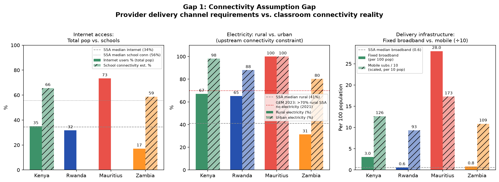

Sub-Saharan Africa Comparative Ecosystem Deep Dive
Examining key Sub-Saharan African economies across the UNESCO 6-Pillars framework. This cross-case triangulation tests whether supply-side EdTech assumptions match ground-level classroom realities in Rwanda, Tanzania, Kenya, Ghana, Nigeria, Zambia, and Mauritius.
Kenya (KEN)
Moderate Discrepancy (25 / 45)Ecosystem Archetype: East African Innovation Hub with High Pedagogical Qualifications
Above SSA median internet access (35%), but rural grid cuts force teachers to pay for mobile data out of pocket.
Strong national budgetary commitment (27.9% of budget), but provider monetization remains heavily direct-to-consumer.
Kiswahili AI performance is highest in the pilot (62%), but community language learners face significant comprehension drops.
Empirical Discrepancy Figures

Figure 1: Fixed broadband (<3/100) vs. EdTech solution delivery requirements. Rural energy deficit acts as upstream bottleneck.
Kenya Collaborative Ecosystem: Ground-Truth Triangulation
Triangulating citizen demand, frontline teacher constraints, verified delivery modalities, and macro policy allocations to eliminate the statistical "data desert."
Basic School Quality vs. Hardware Hype
Citizens consistently prioritize physical textbooks, basic roofs, and teacher presence over digital tablets. Dissatisfaction spikes sharply in rural wards.
The Informal Salary Tax & Crowding
Teachers bear the private financial burden of state digitalization. Without zero-rated educational domains, mobile data is purchased from personal wages.
Low-Tech Reach vs. High-Tech Invisibility
Empirical reach is dominated by broadcast and SMS. High-tech cloud platforms register 0% verified reach in public low-income schools.
The CapEx Trap & Recurrent Budget Lock
Ministries borrow heavily for initial hardware imports ($150M+ DLP tablets) while 92.5% of education budget is locked in recurrent salaries, leaving 0% for maintenance.
test-weighted
tile (rural proxy)
test-weighted
⚠ Ookla tiles skew urban (Speedtest app users). Median tile (23 Mbps) better proxies non-urban reachability. Fixed broadband median: 10.6 Mbps across 6,453 tiles.
GEEAP Cost-Effectiveness & Lifecycle Sustainability Simulator
Evaluates EdTech interventions against the Nobel-led GEEAP “Smart Buys” metric and EdTech Hub Total Cost of Ownership (TCO) lifecycle constraints.
High capital cost ($200/pupil) yielding near-zero learning gains (+0.03σ). Fails cost-effectiveness threshold.
3-year OpEx requirement ($2.5x CapEx) is unfunded. Hardware degrades rapidly without replacement or repair budgets.
Cease 1:1 hardware procurement. Reallocate digital capital into teacher coaching and solar rotational kits.
From the Field
Voices that numbers don't capture
Verbatim excerpts sourced from peer-reviewed field research. Each testimony is coded to the UNESCO 6-Pillar framework. This is qualitative signal — not a dataset.
"We only have power for two hours in the morning before the grid cuts. I charged my phone the night before to show the students the Khan Academy video. By the time the class started, the battery had died."